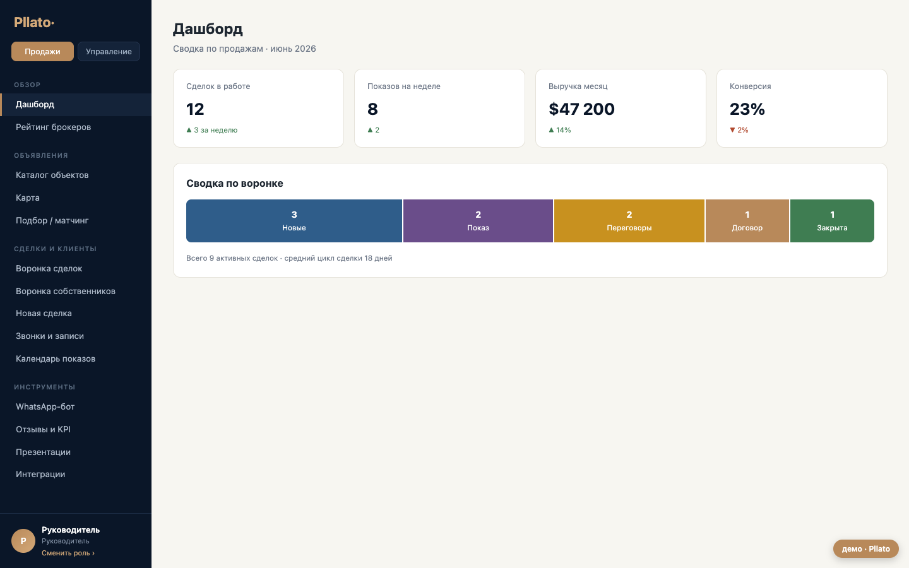
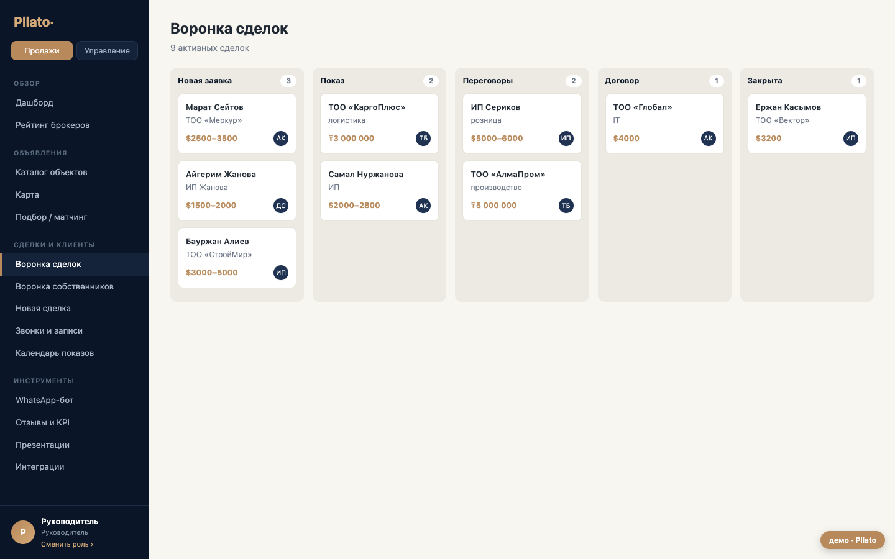

Единая система постановки, делегирования и контроля задач для ИП «КОШЕРБАЕВ» — внутри уже работающей CRM, с учётом филиалов, структуры подчинения и приёмки результата.
В стоимость входит разработка полного объёма ТЗ v1.0, интеграция в текущую CRM, тестирование, запуск и обучение команды.
Менеджер задач станет частью существующей CRM: единая авторизация, сотрудники, филиалы и права. Пользователю не придётся переходить в отдельный сервис или дублировать данные.

Текущие роли, филиалы, сотрудники и визуальный язык системы. Новое меню «Задачи» будет доступно в той же навигации.
Постановка задач сверху вниз, наблюдатели, подзадачи, чек-листы, приёмка, файлы, уведомления и контроль просрочек.

| № | Блок | Что реализуем |
|---|---|---|
| 3 | Филиалы | Общий справочник, привязка сотрудника к одному филиалу, «Не указан», администрирование и правила видимости. |
| 4 | Задача и участники | Автор, постановщик, один ответственный, наблюдатели, описание, параметры, история изменений. |
| 5 | Сроки и события | Старт, событие и дедлайн; напоминания; UTC+5; просрочка и фиксация позднего завершения. |
| 6 | Чек-лист | Упорядоченные пункты, прогресс, ограничения редактирования и отображение выполнения. |
| 7 | Лента и файлы | Комментарии, системные события, @упоминания, вложения, просмотр изображений/PDF, защищённый доступ. |
| 8 | Делегирование | Иерархические подзадачи, независимые статусы, групповые назначения и сводный прогресс. |
| 9 | Статусы | «Новая», «В работе», «На приёмке», «Выполнена», «Отменена» и все предусмотренные ТЗ переходы. |
| 10 | Права | Видимость и назначение по ролям, иерархии и филиалам; безопасное переназначение при деактивации. |
| № | Блок | Что реализуем |
|---|---|---|
| 11 | Интерфейсы | Шесть представлений задач, списки, фильтры, «Контроль», карточка и форма задачи, настройки и архив. |
| 12 | Realtime | Обновление данных до 5 секунд, индикатор офлайн, разрешение конфликтов, немедленный отзыв доступа. |
| 13 | Уведомления | Единый центр CRM, уведомления по событиям, персональное приглушение задачи, рабочие часы и выходные. |
| 14 | Настройки | Рабочий день, напоминания, лимиты файлов и чек-листов, запрещённые типы, правила выходных. |
| 15 | Ошибки | Обработка граничных сценариев: удалённые пользователи, права, сроки, недоступные файлы и конфликты. |
| 16 | Язык и тексты | Единые тексты интерфейса, согласованные статусы, подготовка структуры для мультиязычности. |
Постановщик проверяет выполненную задачу, принимает её либо возвращает в работу с обязательным комментарием.
Отдельные фильтры и счётчики показывают просроченные задачи, причины переноса и фактическую дату завершения.
Проверка прав выполняется при каждом обращении; ссылки на файлы не открывают доступ посторонним.
Все ключевые правила выносятся в административные настройки без необходимости менять код.
| № | Работы | Стоимость |
|---|---|---|
| 1 | Аналитика, проектирование сценариев и техническая архитектура | 150 000 ₸ |
| 2 | Филиалы, привязка сотрудников, иерархия и права доступа | 220 000 ₸ |
| 3 | Карточка задачи, сроки, события и чек-листы | 300 000 ₸ |
| 4 | Статусы, приёмка результата и запрос переноса срока | 260 000 ₸ |
| 5 | Делегирование, подзадачи и групповые назначения | 280 000 ₸ |
| 6 | Лента, комментарии, упоминания, файлы и история | 280 000 ₸ |
| 7 | Шесть представлений, фильтры, контроль, архив и адаптивный UI | 300 000 ₸ |
| 8 | Realtime, офлайн-индикация и обработка конфликтов | 230 000 ₸ |
| 9 | Уведомления, админ-настройки, ошибки и мультиязычная структура | 230 000 ₸ |
| 10 | QA, запуск, настройка, документация и обучение команды | 150 000 ₸ |
| ИТОГО ЗА v1.0 | 2 400 000 ₸ | |
1 неделя
Сценарии, права, прототип экранов, архитектура данных.
3–4 недели
Задачи, роли, сроки, статусы, делегирование, файлы.
2–3 недели
Представления, realtime, уведомления, настройки.
1–2 недели
QA, приёмка, перенос настроек, обучение.
3 месяца на исправление ошибок в реализованном объёме после подписания акта.
По согласованным сценариям и требованиям приложенного ТЗ, на тестовом контуре перед боевым запуском.
ТЗ клиента прямо относит следующие функции к будущим версиям. Мы показываем ориентиры отдельно, чтобы базовая цена оставалась прозрачной.
| Опция | Ориентир |
|---|---|
| Повторяющиеся задачи | 150 000 ₸ |
| Приоритет задач | 80 000 ₸ |
| Календарное представление | 250 000 ₸ |
| Связи с клиентом / сделкой / объектом CRM | 200 000 ₸ |
| Шаблоны задач и чек-листов | 180 000 ₸ |
| Учёт времени | 180 000 ₸ |
| Email и мессенджеры | 250 000 ₸ + тарифы |
| Производственный календарь | 120 000 ₸ |
Опции не входят в итог 2 400 000 ₸ и запускаются только после отдельного согласования.
После подтверждения предложения фиксируем состав работ, выпускаем договор и счёт на первый платёж 240 000 ₸.
ИП «КОШЕРБАЕВ»
БИН 620203302396
Кордай
ИП «STUDYSTORIES.APP»
БИН 880607300110
Цай Платон Львович
Далее без сокращений приложен исходный документ «Менеджер задач CRM — ТЗ v1.0». Он является основанием для состава работ и приёмки модуля.
Разделы 1–17 · 22 страницы исходного документа